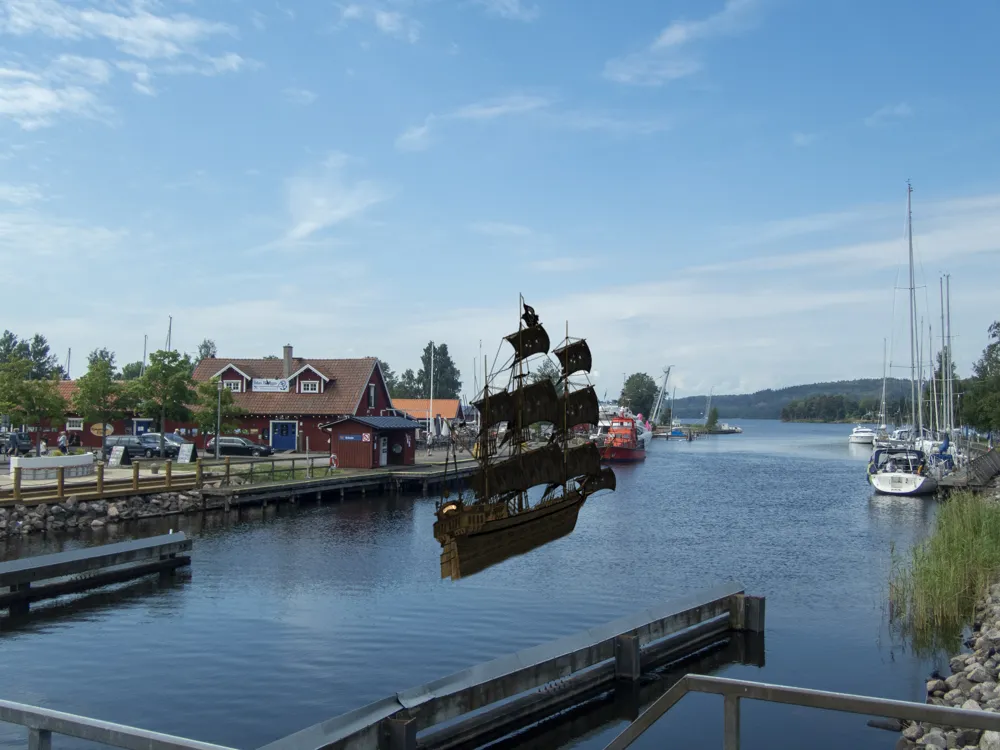

Inrikes

Pirater i Göta Kanal
På sistone har allt fler båtar i Göta Kanal blivit kapade, och i vissa fall till och med spårlöst försvunnit. För att se hur piraterna går till väga har Löken följt med på ett fraktfartyg som gick genom kanalen.
Allt var lugnt och stilla ända tills fartyget åkte ut på Vänern. Då såg man en träeka bakom båten med en frenetiskt paddlande man i 60-årsåldern med en Lügerpistol i bältet. Efter en timme lyckades han ro ikapp fartyget, gå in på bryggan och hota besättningen med sin pistol för att ta kontroll över fartyget. Han gick även med på en intervju: "Jag gör allt jag kan för att överleva här ute i ödemarken, men det går inte så bra. Affärerna går otroligt dåligt nu när den där nya jävla järnvägen. Jävla nymodigheter. Det är därför jag har en pistol från 1898; det är för dyrt med nya maskingevär".
Piraten hade ingen skepparexamen och gick på grund. Skeppet sjönk och ingen överlevde.